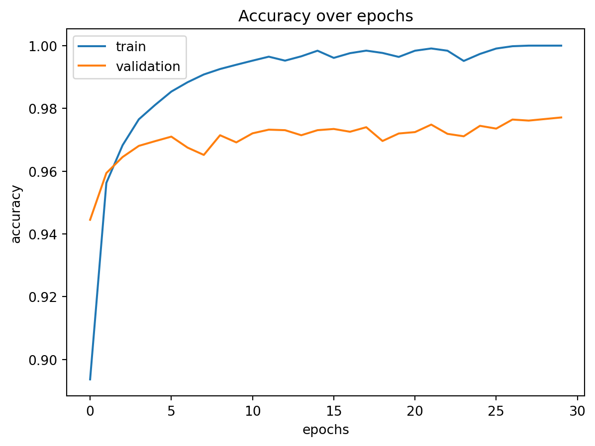
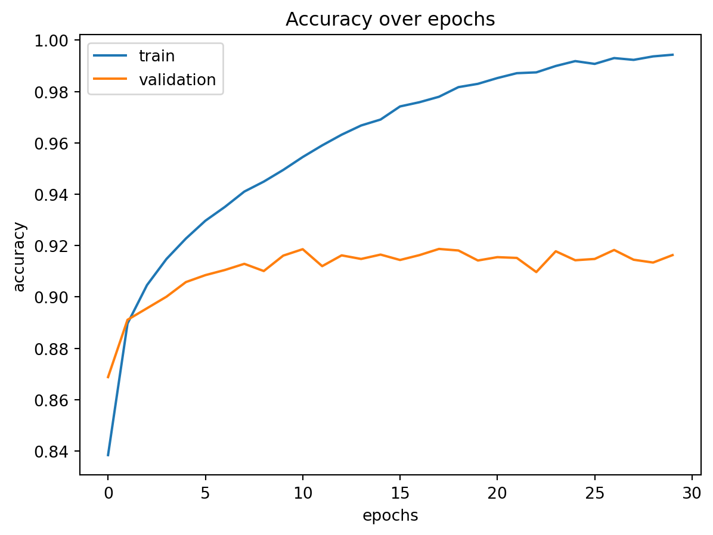

<!DOCTYPE html>
<html xmlns="http://www.w3.org/1999/xhtml" lang="en" xml:lang="en"><head>

<meta charset="utf-8">
<meta name="generator" content="quarto-1.7.31">

<meta name="viewport" content="width=device-width, initial-scale=1.0, user-scalable=yes">


<title>Klassifikation von MNIST und Fashion-MNIST – Grundlagen der Künstlichen Intelligenz (GKI)</title>
<style>
code{white-space: pre-wrap;}
span.smallcaps{font-variant: small-caps;}
div.columns{display: flex; gap: min(4vw, 1.5em);}
div.column{flex: auto; overflow-x: auto;}
div.hanging-indent{margin-left: 1.5em; text-indent: -1.5em;}
ul.task-list{list-style: none;}
ul.task-list li input[type="checkbox"] {
  width: 0.8em;
  margin: 0 0.8em 0.2em -1em; /* quarto-specific, see https://github.com/quarto-dev/quarto-cli/issues/4556 */ 
  vertical-align: middle;
}
/* CSS for syntax highlighting */
html { -webkit-text-size-adjust: 100%; }
pre > code.sourceCode { white-space: pre; position: relative; }
pre > code.sourceCode > span { display: inline-block; line-height: 1.25; }
pre > code.sourceCode > span:empty { height: 1.2em; }
.sourceCode { overflow: visible; }
code.sourceCode > span { color: inherit; text-decoration: inherit; }
div.sourceCode { margin: 1em 0; }
pre.sourceCode { margin: 0; }
@media screen {
div.sourceCode { overflow: auto; }
}
@media print {
pre > code.sourceCode { white-space: pre-wrap; }
pre > code.sourceCode > span { text-indent: -5em; padding-left: 5em; }
}
pre.numberSource code
  { counter-reset: source-line 0; }
pre.numberSource code > span
  { position: relative; left: -4em; counter-increment: source-line; }
pre.numberSource code > span > a:first-child::before
  { content: counter(source-line);
    position: relative; left: -1em; text-align: right; vertical-align: baseline;
    border: none; display: inline-block;
    -webkit-touch-callout: none; -webkit-user-select: none;
    -khtml-user-select: none; -moz-user-select: none;
    -ms-user-select: none; user-select: none;
    padding: 0 4px; width: 4em;
  }
pre.numberSource { margin-left: 3em;  padding-left: 4px; }
div.sourceCode
  {   }
@media screen {
pre > code.sourceCode > span > a:first-child::before { text-decoration: underline; }
}
</style>


<script src="../site_libs/quarto-nav/quarto-nav.js"></script>
<script src="../site_libs/quarto-nav/headroom.min.js"></script>
<script src="../site_libs/clipboard/clipboard.min.js"></script>
<script src="../site_libs/quarto-search/autocomplete.umd.js"></script>
<script src="../site_libs/quarto-search/fuse.min.js"></script>
<script src="../site_libs/quarto-search/quarto-search.js"></script>
<meta name="quarto:offset" content="../">
<link href="../include/03_04_iris_structured_classification.html" rel="next">
<link href="../include/03_02_labeln_datenvorbereitung.html" rel="prev">
<script src="../site_libs/quarto-html/quarto.js" type="module"></script>
<script src="../site_libs/quarto-html/tabsets/tabsets.js" type="module"></script>
<script src="../site_libs/quarto-html/popper.min.js"></script>
<script src="../site_libs/quarto-html/tippy.umd.min.js"></script>
<script src="../site_libs/quarto-html/anchor.min.js"></script>
<link href="../site_libs/quarto-html/tippy.css" rel="stylesheet">
<link href="../site_libs/quarto-html/quarto-syntax-highlighting-e1a5c8363afafaef2c763b6775fbf3ca.css" rel="stylesheet" id="quarto-text-highlighting-styles">
<script src="../site_libs/bootstrap/bootstrap.min.js"></script>
<link href="../site_libs/bootstrap/bootstrap-icons.css" rel="stylesheet">
<link href="../site_libs/bootstrap/bootstrap-d28e8a28802ca24906ab1d34ee0a2039.min.css" rel="stylesheet" append-hash="true" id="quarto-bootstrap" data-mode="light">
<script id="quarto-search-options" type="application/json">{
  "location": "sidebar",
  "copy-button": false,
  "collapse-after": 3,
  "panel-placement": "start",
  "type": "textbox",
  "limit": 50,
  "keyboard-shortcut": [
    "f",
    "/",
    "s"
  ],
  "show-item-context": false,
  "language": {
    "search-no-results-text": "No results",
    "search-matching-documents-text": "matching documents",
    "search-copy-link-title": "Copy link to search",
    "search-hide-matches-text": "Hide additional matches",
    "search-more-match-text": "more match in this document",
    "search-more-matches-text": "more matches in this document",
    "search-clear-button-title": "Clear",
    "search-text-placeholder": "",
    "search-detached-cancel-button-title": "Cancel",
    "search-submit-button-title": "Submit",
    "search-label": "Search"
  }
}</script>
<script>
  // Define MathJax macros BEFORE MathJax loads (Quarto handles the order)
  // Only work in math mode: use $\ra$, not plain \ra in text.
  window.MathJax = {
    tex: {
      macros: {
        ra:  "\\rightarrow",
        hra: "\\hookrightarrow",
        ul:  ["\\underline{#1}", 1],
        bs:  ["\\boldsymbol{#1}", 1]
      }
    }
  };
</script>


<link rel="stylesheet" href="../styles.css">
</head>

<body class="nav-sidebar docked quarto-light">

<div id="quarto-search-results"></div>
  <header id="quarto-header" class="headroom fixed-top">
  <nav class="quarto-secondary-nav">
    <div class="container-fluid d-flex">
      <button type="button" class="quarto-btn-toggle btn" data-bs-toggle="collapse" role="button" data-bs-target=".quarto-sidebar-collapse-item" aria-controls="quarto-sidebar" aria-expanded="false" aria-label="Toggle sidebar navigation" onclick="if (window.quartoToggleHeadroom) { window.quartoToggleHeadroom(); }">
        <i class="bi bi-layout-text-sidebar-reverse"></i>
      </button>
        <nav class="quarto-page-breadcrumbs" aria-label="breadcrumb"><ol class="breadcrumb"><li class="breadcrumb-item">Implementierung mit Hilfe von Python</li><li class="breadcrumb-item"><a href="../include/03_02_labeln_datenvorbereitung.html">Neuronale Netze mit Keras</a></li><li class="breadcrumb-item"><a href="../include/03_03_mnist_structured.html">Optimierung eines Modells: MNIST-Datensatz</a></li></ol></nav>
        <a class="flex-grow-1" role="navigation" data-bs-toggle="collapse" data-bs-target=".quarto-sidebar-collapse-item" aria-controls="quarto-sidebar" aria-expanded="false" aria-label="Toggle sidebar navigation" onclick="if (window.quartoToggleHeadroom) { window.quartoToggleHeadroom(); }">      
        </a>
      <button type="button" class="btn quarto-search-button" aria-label="Search" onclick="window.quartoOpenSearch();">
        <i class="bi bi-search"></i>
      </button>
    </div>
  </nav>
</header>
<!-- content -->
<div id="quarto-content" class="quarto-container page-columns page-rows-contents page-layout-article">
<!-- sidebar -->
  <nav id="quarto-sidebar" class="sidebar collapse collapse-horizontal quarto-sidebar-collapse-item sidebar-navigation docked overflow-auto">
    <div class="pt-lg-2 mt-2 text-left sidebar-header">
      <a href="../index.html" class="sidebar-logo-link">
      
      </a>
      <div class="sidebar-tools-main tools-wide">
    <div class="dropdown">
      <a href="" title="" id="quarto-navigation-tool-dropdown-0" class="quarto-navigation-tool dropdown-toggle px-1" data-bs-toggle="dropdown" aria-expanded="false" role="link" aria-label=""><i class="bi bi-github"></i></a>
      <ul class="dropdown-menu" aria-labelledby="quarto-navigation-tool-dropdown-0">
          <li>
            <a class="dropdown-item sidebar-tools-main-item" href="https://github.com/orgs/HamburgerFH/dashboard">
            Source Code
            </a>
          </li>
          <li>
            <a class="dropdown-item sidebar-tools-main-item" href="https://github.com/orgs/HamburgerFH/dashboard">
            Report a Bug
            </a>
          </li>
      </ul>
    </div>
    <a href="https://www.linkedin.com/school/hamburger-fern-hochschule/" title="" class="quarto-navigation-tool px-1" aria-label=""><i class="bi bi-linkedin"></i></a>
    <a href="https://www.youtube.com/user/HFHFernhochschule" title="" class="quarto-navigation-tool px-1" aria-label=""><i class="bi bi-youtube"></i></a>
    <a href="https://www.instagram.com/hfhfernstudium/" title="" class="quarto-navigation-tool px-1" aria-label=""><i class="bi bi-instagram"></i></a>
</div>
      </div>
        <div class="mt-2 flex-shrink-0 align-items-center">
        <div class="sidebar-search">
        <div id="quarto-search" class="" title="Search"></div>
        </div>
        </div>
    <div class="sidebar-menu-container"> 
    <ul class="list-unstyled mt-1">
        <li class="sidebar-item">
  <div class="sidebar-item-container"> 
  <a href="../index.html" class="sidebar-item-text sidebar-link">
 <span class="menu-text">Home</span></a>
  </div>
</li>
        <li class="px-0"><hr class="sidebar-divider hi "></li>
        <li class="sidebar-item sidebar-item-section">
      <div class="sidebar-item-container"> 
            <a class="sidebar-item-text sidebar-link text-start" data-bs-toggle="collapse" data-bs-target="#quarto-sidebar-section-1" role="navigation" aria-expanded="true">
 <span class="menu-text">Einführung in die Künstliche Intelligenz</span></a>
          <a class="sidebar-item-toggle text-start" data-bs-toggle="collapse" data-bs-target="#quarto-sidebar-section-1" role="navigation" aria-expanded="true" aria-label="Toggle section">
            <i class="bi bi-chevron-right ms-2"></i>
          </a> 
      </div>
      <ul id="quarto-sidebar-section-1" class="collapse list-unstyled sidebar-section depth1 show">  
          <li class="sidebar-item">
  <div class="sidebar-item-container"> 
  <a href="../include/01_01_einfuehrung_kuenstliche_intelligenz.html" class="sidebar-item-text sidebar-link">
 <span class="menu-text">Einführung in die Künstliche Intelligenz</span></a>
  </div>
</li>
          <li class="sidebar-item">
  <div class="sidebar-item-container"> 
  <a href="../include/01_02_themenfelder_kuenstliche_intelligenz.html" class="sidebar-item-text sidebar-link">
 <span class="menu-text">Themenfelder der Künstlichen Intelligenz</span></a>
  </div>
</li>
          <li class="sidebar-item">
  <div class="sidebar-item-container"> 
  <a href="../include/01_03_verarbeitung_erzeugung_daten.html" class="sidebar-item-text sidebar-link">
 <span class="menu-text">Verarbeitung und Erzeugen von Daten</span></a>
  </div>
</li>
          <li class="sidebar-item">
  <div class="sidebar-item-container"> 
  <a href="../include/01_04_anwendungsmoeglichkeit_ki.html" class="sidebar-item-text sidebar-link">
 <span class="menu-text">Anwendungsmöglichkeiten / Beispiele künstlicher Intelligenz</span></a>
  </div>
</li>
      </ul>
  </li>
        <li class="px-0"><hr class="sidebar-divider hi "></li>
        <li class="sidebar-item sidebar-item-section">
      <div class="sidebar-item-container"> 
            <a class="sidebar-item-text sidebar-link text-start" data-bs-toggle="collapse" data-bs-target="#quarto-sidebar-section-2" role="navigation" aria-expanded="true">
 <span class="menu-text">Zentrale Algorithmen der künstlichen Intelligenz</span></a>
          <a class="sidebar-item-toggle text-start" data-bs-toggle="collapse" data-bs-target="#quarto-sidebar-section-2" role="navigation" aria-expanded="true" aria-label="Toggle section">
            <i class="bi bi-chevron-right ms-2"></i>
          </a> 
      </div>
      <ul id="quarto-sidebar-section-2" class="collapse list-unstyled sidebar-section depth1 show">  
          <li class="sidebar-item">
  <div class="sidebar-item-container"> 
  <a href="../include/02_01_grundlagen_und_definitionen.html" class="sidebar-item-text sidebar-link">
 <span class="menu-text">Grundlagen und Definitionen</span></a>
  </div>
</li>
          <li class="sidebar-item">
  <div class="sidebar-item-container"> 
  <a href="../include/02_02_entscheidungsbaeume.html" class="sidebar-item-text sidebar-link">
 <span class="menu-text">Entscheidungsbäume</span></a>
  </div>
</li>
          <li class="sidebar-item">
  <div class="sidebar-item-container"> 
  <a href="../include/02_03_SLP.html" class="sidebar-item-text sidebar-link">
 <span class="menu-text">Neuronale Netze I: SLP</span></a>
  </div>
</li>
          <li class="sidebar-item">
  <div class="sidebar-item-container"> 
  <a href="../include/02_04_MLP.html" class="sidebar-item-text sidebar-link">
 <span class="menu-text">Neuronale Netze II: MLP</span></a>
  </div>
</li>
      </ul>
  </li>
        <li class="px-0"><hr class="sidebar-divider hi "></li>
        <li class="sidebar-item sidebar-item-section">
      <div class="sidebar-item-container"> 
            <a class="sidebar-item-text sidebar-link text-start" data-bs-toggle="collapse" data-bs-target="#quarto-sidebar-section-3" role="navigation" aria-expanded="true">
 <span class="menu-text">Implementierung mit Hilfe von Python</span></a>
          <a class="sidebar-item-toggle text-start" data-bs-toggle="collapse" data-bs-target="#quarto-sidebar-section-3" role="navigation" aria-expanded="true" aria-label="Toggle section">
            <i class="bi bi-chevron-right ms-2"></i>
          </a> 
      </div>
      <ul id="quarto-sidebar-section-3" class="collapse list-unstyled sidebar-section depth1 show">  
          <li class="sidebar-item sidebar-item-section">
      <div class="sidebar-item-container"> 
            <a class="sidebar-item-text sidebar-link text-start collapsed" data-bs-toggle="collapse" data-bs-target="#quarto-sidebar-section-4" role="navigation" aria-expanded="false">
 <span class="menu-text">Datenvorverarbeitung</span></a>
          <a class="sidebar-item-toggle text-start collapsed" data-bs-toggle="collapse" data-bs-target="#quarto-sidebar-section-4" role="navigation" aria-expanded="false" aria-label="Toggle section">
            <i class="bi bi-chevron-right ms-2"></i>
          </a> 
      </div>
      <ul id="quarto-sidebar-section-4" class="collapse list-unstyled sidebar-section depth2 ">  
          <li class="sidebar-item">
  <div class="sidebar-item-container"> 
  <a href="../include/03_00_plots_allgemein.html" class="sidebar-item-text sidebar-link">
 <span class="menu-text">Temperaturplot</span></a>
  </div>
</li>
          <li class="sidebar-item">
  <div class="sidebar-item-container"> 
  <a href="../include/03_01_weinplots.html" class="sidebar-item-text sidebar-link">
 <span class="menu-text">Weinplots</span></a>
  </div>
</li>
      </ul>
  </li>
          <li class="sidebar-item sidebar-item-section">
      <div class="sidebar-item-container"> 
            <a class="sidebar-item-text sidebar-link text-start" data-bs-toggle="collapse" data-bs-target="#quarto-sidebar-section-5" role="navigation" aria-expanded="true">
 <span class="menu-text">Neuronale Netze mit Keras</span></a>
          <a class="sidebar-item-toggle text-start" data-bs-toggle="collapse" data-bs-target="#quarto-sidebar-section-5" role="navigation" aria-expanded="true" aria-label="Toggle section">
            <i class="bi bi-chevron-right ms-2"></i>
          </a> 
      </div>
      <ul id="quarto-sidebar-section-5" class="collapse list-unstyled sidebar-section depth2 show">  
          <li class="sidebar-item">
  <div class="sidebar-item-container"> 
  <a href="../include/03_02_labeln_datenvorbereitung.html" class="sidebar-item-text sidebar-link">
 <span class="menu-text">Einführung in Keras</span></a>
  </div>
</li>
          <li class="sidebar-item">
  <div class="sidebar-item-container"> 
  <a href="../include/03_03_mnist_structured.html" class="sidebar-item-text sidebar-link active">
 <span class="menu-text">Optimierung eines Modells: MNIST-Datensatz</span></a>
  </div>
</li>
      </ul>
  </li>
          <li class="sidebar-item sidebar-item-section">
      <div class="sidebar-item-container"> 
            <a class="sidebar-item-text sidebar-link text-start collapsed" data-bs-toggle="collapse" data-bs-target="#quarto-sidebar-section-6" role="navigation" aria-expanded="false">
 <span class="menu-text">Entscheidungsbäume</span></a>
          <a class="sidebar-item-toggle text-start collapsed" data-bs-toggle="collapse" data-bs-target="#quarto-sidebar-section-6" role="navigation" aria-expanded="false" aria-label="Toggle section">
            <i class="bi bi-chevron-right ms-2"></i>
          </a> 
      </div>
      <ul id="quarto-sidebar-section-6" class="collapse list-unstyled sidebar-section depth2 ">  
          <li class="sidebar-item">
  <div class="sidebar-item-container"> 
  <a href="../include/03_04_iris_structured_classification.html" class="sidebar-item-text sidebar-link">
 <span class="menu-text">Klassifikation: Iris-Datensatz</span></a>
  </div>
</li>
          <li class="sidebar-item">
  <div class="sidebar-item-container"> 
  <a href="../include/03_04_iris_structured_regression.html" class="sidebar-item-text sidebar-link">
 <span class="menu-text">Regression: Wein-Datensatz</span></a>
  </div>
</li>
      </ul>
  </li>
      </ul>
  </li>
        <li class="px-0"><hr class="sidebar-divider hi "></li>
        <li class="sidebar-item sidebar-item-section">
      <div class="sidebar-item-container"> 
            <a class="sidebar-item-text sidebar-link text-start" data-bs-toggle="collapse" data-bs-target="#quarto-sidebar-section-7" role="navigation" aria-expanded="true">
 <span class="menu-text">Hyperparameter-Optimierung</span></a>
          <a class="sidebar-item-toggle text-start" data-bs-toggle="collapse" data-bs-target="#quarto-sidebar-section-7" role="navigation" aria-expanded="true" aria-label="Toggle section">
            <i class="bi bi-chevron-right ms-2"></i>
          </a> 
      </div>
      <ul id="quarto-sidebar-section-7" class="collapse list-unstyled sidebar-section depth1 show">  
          <li class="sidebar-item sidebar-item-section">
      <div class="sidebar-item-container"> 
            <a class="sidebar-item-text sidebar-link text-start collapsed" data-bs-toggle="collapse" data-bs-target="#quarto-sidebar-section-8" role="navigation" aria-expanded="false">
 <span class="menu-text">Grid Search</span></a>
          <a class="sidebar-item-toggle text-start collapsed" data-bs-toggle="collapse" data-bs-target="#quarto-sidebar-section-8" role="navigation" aria-expanded="false" aria-label="Toggle section">
            <i class="bi bi-chevron-right ms-2"></i>
          </a> 
      </div>
      <ul id="quarto-sidebar-section-8" class="collapse list-unstyled sidebar-section depth2 ">  
          <li class="sidebar-item">
  <div class="sidebar-item-container"> 
  <a href="../include/04_01_HO_GS.html" class="sidebar-item-text sidebar-link">
 <span class="menu-text">Entscheidungsbaum Wdhl.</span></a>
  </div>
</li>
          <li class="sidebar-item">
  <div class="sidebar-item-container"> 
  <a href="../include/04_01_HO_GS.html" class="sidebar-item-text sidebar-link">
 <span class="menu-text">Implementierung Grid Search</span></a>
  </div>
</li>
      </ul>
  </li>
          <li class="sidebar-item sidebar-item-section">
      <div class="sidebar-item-container"> 
            <a class="sidebar-item-text sidebar-link text-start collapsed" data-bs-toggle="collapse" data-bs-target="#quarto-sidebar-section-9" role="navigation" aria-expanded="false">
 <span class="menu-text">Evolutionäre Algorithmen</span></a>
          <a class="sidebar-item-toggle text-start collapsed" data-bs-toggle="collapse" data-bs-target="#quarto-sidebar-section-9" role="navigation" aria-expanded="false" aria-label="Toggle section">
            <i class="bi bi-chevron-right ms-2"></i>
          </a> 
      </div>
      <ul id="quarto-sidebar-section-9" class="collapse list-unstyled sidebar-section depth2 ">  
          <li class="sidebar-item">
  <div class="sidebar-item-container"> 
  <a href="../include/04_03_evol_algos_01.html" class="sidebar-item-text sidebar-link">
 <span class="menu-text">Einführung</span></a>
  </div>
</li>
          <li class="sidebar-item">
  <div class="sidebar-item-container"> 
  <a href="../include/04_03_evol_algos_02.html" class="sidebar-item-text sidebar-link">
 <span class="menu-text">Implementierung</span></a>
  </div>
</li>
      </ul>
  </li>
      </ul>
  </li>
        <li class="px-0"><hr class="sidebar-divider hi "></li>
        <li class="sidebar-item sidebar-item-section">
      <div class="sidebar-item-container"> 
            <a class="sidebar-item-text sidebar-link text-start" data-bs-toggle="collapse" data-bs-target="#quarto-sidebar-section-10" role="navigation" aria-expanded="true">
 <span class="menu-text">Swarm-Intelligence</span></a>
          <a class="sidebar-item-toggle text-start" data-bs-toggle="collapse" data-bs-target="#quarto-sidebar-section-10" role="navigation" aria-expanded="true" aria-label="Toggle section">
            <i class="bi bi-chevron-right ms-2"></i>
          </a> 
      </div>
      <ul id="quarto-sidebar-section-10" class="collapse list-unstyled sidebar-section depth1 show">  
          <li class="sidebar-item">
  <div class="sidebar-item-container"> 
  <a href="../include/05_01_KI_OPT.html" class="sidebar-item-text sidebar-link">
 <span class="menu-text">KI zur Optimierung</span></a>
  </div>
</li>
          <li class="sidebar-item">
  <div class="sidebar-item-container"> 
  <a href="../include/05_02_ant_01.html" class="sidebar-item-text sidebar-link">
 <span class="menu-text">Ameisenalgorithmen</span></a>
  </div>
</li>
          <li class="sidebar-item">
  <div class="sidebar-item-container"> 
  <a href="../include/05_03_psw_01.html" class="sidebar-item-text sidebar-link">
 <span class="menu-text">Partikel-Schwarm-Verfahren</span></a>
  </div>
</li>
      </ul>
  </li>
        <li class="px-0"><hr class="sidebar-divider hi "></li>
        <li class="sidebar-item sidebar-item-section">
      <div class="sidebar-item-container"> 
            <a class="sidebar-item-text sidebar-link text-start" data-bs-toggle="collapse" data-bs-target="#quarto-sidebar-section-11" role="navigation" aria-expanded="true">
 <span class="menu-text">Altklausuren</span></a>
          <a class="sidebar-item-toggle text-start" data-bs-toggle="collapse" data-bs-target="#quarto-sidebar-section-11" role="navigation" aria-expanded="true" aria-label="Toggle section">
            <i class="bi bi-chevron-right ms-2"></i>
          </a> 
      </div>
      <ul id="quarto-sidebar-section-11" class="collapse list-unstyled sidebar-section depth1 show">  
          <li class="sidebar-item">
  <div class="sidebar-item-container"> 
  <a href="../include/99_altklausuren_A1.html" class="sidebar-item-text sidebar-link">
 <span class="menu-text">Aufgabentyp 1</span></a>
  </div>
</li>
          <li class="sidebar-item">
  <div class="sidebar-item-container"> 
  <a href="../include/99_altklausuren_A2.html" class="sidebar-item-text sidebar-link">
 <span class="menu-text">Aufgabentyp 2</span></a>
  </div>
</li>
          <li class="sidebar-item">
  <div class="sidebar-item-container"> 
  <a href="../include/99_altklausuren_A3.html" class="sidebar-item-text sidebar-link">
 <span class="menu-text">Aufgabentyp 3</span></a>
  </div>
</li>
          <li class="sidebar-item">
  <div class="sidebar-item-container"> 
  <a href="../include/99_altklausuren_A4.html" class="sidebar-item-text sidebar-link">
 <span class="menu-text">Aufgabentyp 4</span></a>
  </div>
</li>
          <li class="sidebar-item">
  <div class="sidebar-item-container"> 
  <a href="../include/99_altklausuren_A5.html" class="sidebar-item-text sidebar-link">
 <span class="menu-text">Aufgabentyp 5</span></a>
  </div>
</li>
      </ul>
  </li>
        <li class="px-0"><hr class="sidebar-divider hi "></li>
        <li class="sidebar-item">
  <div class="sidebar-item-container"> 
  <a href="../about.html" class="sidebar-item-text sidebar-link">
 <span class="menu-text">About</span></a>
  </div>
</li>
    </ul>
    </div>
</nav>
<div id="quarto-sidebar-glass" class="quarto-sidebar-collapse-item" data-bs-toggle="collapse" data-bs-target=".quarto-sidebar-collapse-item"></div>
<!-- margin-sidebar -->
    <div id="quarto-margin-sidebar" class="sidebar margin-sidebar">
        <nav id="TOC" role="doc-toc" class="toc-active">
    <h2 id="toc-title">On this page</h2>
   
  <ul>
  <li><a href="#bibliotheken-importieren" id="toc-bibliotheken-importieren" class="nav-link active" data-scroll-target="#bibliotheken-importieren">Bibliotheken importieren</a></li>
  <li><a href="#mnist-datensatz-laden-und-vorbereiten" id="toc-mnist-datensatz-laden-und-vorbereiten" class="nav-link" data-scroll-target="#mnist-datensatz-laden-und-vorbereiten">MNIST-Datensatz laden und vorbereiten</a></li>
  <li><a href="#one-hot-encoding-der-zielvariablen" id="toc-one-hot-encoding-der-zielvariablen" class="nav-link" data-scroll-target="#one-hot-encoding-der-zielvariablen">One-Hot-Encoding der Zielvariablen</a></li>
  <li><a href="#feedforward-netzwerk-erstellen" id="toc-feedforward-netzwerk-erstellen" class="nav-link" data-scroll-target="#feedforward-netzwerk-erstellen">Feedforward-Netzwerk erstellen</a></li>
  <li><a href="#kompilieren-des-modells" id="toc-kompilieren-des-modells" class="nav-link" data-scroll-target="#kompilieren-des-modells">Kompilieren des Modells</a></li>
  <li><a href="#training-des-feedforward-netzes" id="toc-training-des-feedforward-netzes" class="nav-link" data-scroll-target="#training-des-feedforward-netzes">Training des Feedforward-Netzes</a></li>
  <li><a href="#hinweise" id="toc-hinweise" class="nav-link" data-scroll-target="#hinweise">Hinweise:</a></li>
  <li><a href="#trainingsverlauf-feedforward-netz" id="toc-trainingsverlauf-feedforward-netz" class="nav-link" data-scroll-target="#trainingsverlauf-feedforward-netz">Trainingsverlauf (Feedforward-Netz)</a></li>
  <li><a href="#convolutional-neural-networks-cnn-mit-fashion-mnist" id="toc-convolutional-neural-networks-cnn-mit-fashion-mnist" class="nav-link" data-scroll-target="#convolutional-neural-networks-cnn-mit-fashion-mnist">Convolutional Neural Networks (CNN) mit Fashion-MNIST</a></li>
  <li><a href="#cnn-architektur-definieren" id="toc-cnn-architektur-definieren" class="nav-link" data-scroll-target="#cnn-architektur-definieren">CNN-Architektur definieren</a></li>
  <li><a href="#kompilierung-des-cnn-modells" id="toc-kompilierung-des-cnn-modells" class="nav-link" data-scroll-target="#kompilierung-des-cnn-modells">Kompilierung des CNN-Modells</a></li>
  <li><a href="#training-des-cnns-auf-fashion-mnist" id="toc-training-des-cnns-auf-fashion-mnist" class="nav-link" data-scroll-target="#training-des-cnns-auf-fashion-mnist">Training des CNNs auf Fashion-MNIST</a></li>
  <li><a href="#visualisierung-des-cnn-trainingsverlaufs" id="toc-visualisierung-des-cnn-trainingsverlaufs" class="nav-link" data-scroll-target="#visualisierung-des-cnn-trainingsverlaufs">Visualisierung des CNN-Trainingsverlaufs</a></li>
  <li><a href="#zusammenfassung" id="toc-zusammenfassung" class="nav-link" data-scroll-target="#zusammenfassung">Zusammenfassung</a></li>
  <li><a href="#cnn-mit-dropout-zur-vermeidung-von-overfitting" id="toc-cnn-mit-dropout-zur-vermeidung-von-overfitting" class="nav-link" data-scroll-target="#cnn-mit-dropout-zur-vermeidung-von-overfitting">CNN mit Dropout zur Vermeidung von Overfitting</a></li>
  </ul>
</nav>
    </div>
<!-- main -->
<main class="content" id="quarto-document-content">

<header id="title-block-header" class="quarto-title-block default"><nav class="quarto-page-breadcrumbs quarto-title-breadcrumbs d-none d-lg-block" aria-label="breadcrumb"><ol class="breadcrumb"><li class="breadcrumb-item">Implementierung mit Hilfe von Python</li><li class="breadcrumb-item"><a href="../include/03_02_labeln_datenvorbereitung.html">Neuronale Netze mit Keras</a></li><li class="breadcrumb-item"><a href="../include/03_03_mnist_structured.html">Optimierung eines Modells: MNIST-Datensatz</a></li></ol></nav>
<div class="quarto-title">
<h1 class="title">Klassifikation von MNIST und Fashion-MNIST</h1>
</div>


<div class="quarto-title-meta">

    
  
    
  </div>
  


</header>


<p>In diesem Notebook vergleichen wir verschiedene neuronale Netzarchitekturen zur Klassifikation von Bildern aus dem MNIST- und Fashion-MNIST-Datensatz.</p>
<section id="bibliotheken-importieren" class="level2">
<h2 class="anchored" data-anchor-id="bibliotheken-importieren">Bibliotheken importieren</h2>
<div id="7e995ec2" class="cell" data-execution_count="1">
<div class="sourceCode cell-code" id="cb1"><pre class="sourceCode python code-with-copy"><code class="sourceCode python"><span id="cb1-1"><a href="#cb1-1" aria-hidden="true" tabindex="-1"></a><span class="im">import</span> keras <span class="im">as</span> K</span>
<span id="cb1-2"><a href="#cb1-2" aria-hidden="true" tabindex="-1"></a><span class="im">import</span> matplotlib.pyplot <span class="im">as</span> plt</span>
<span id="cb1-3"><a href="#cb1-3" aria-hidden="true" tabindex="-1"></a><span class="im">from</span> keras.models <span class="im">import</span> Sequential</span>
<span id="cb1-4"><a href="#cb1-4" aria-hidden="true" tabindex="-1"></a><span class="im">from</span> keras.layers <span class="im">import</span> Conv2D, MaxPooling2D, Flatten, Dense, Dropout</span></code><button title="Copy to Clipboard" class="code-copy-button"><i class="bi"></i></button></pre></div>
<div class="cell-output cell-output-stderr">
<pre><code>2025-08-16 19:25:03.643774: I external/local_xla/xla/tsl/cuda/cudart_stub.cc:31] Could not find cuda drivers on your machine, GPU will not be used.
2025-08-16 19:25:03.689217: I tensorflow/core/platform/cpu_feature_guard.cc:210] This TensorFlow binary is optimized to use available CPU instructions in performance-critical operations.
To enable the following instructions: AVX2 FMA, in other operations, rebuild TensorFlow with the appropriate compiler flags.
2025-08-16 19:25:05.288148: I external/local_xla/xla/tsl/cuda/cudart_stub.cc:31] Could not find cuda drivers on your machine, GPU will not be used.</code></pre>
</div>
</div>
</section>
<section id="mnist-datensatz-laden-und-vorbereiten" class="level2">
<h2 class="anchored" data-anchor-id="mnist-datensatz-laden-und-vorbereiten">MNIST-Datensatz laden und vorbereiten</h2>
<ul>
<li>Laden des Fashion-MNIST-Datensatzes aus Keras (10 Klassen, z. B. Schuhe, Pullover, Taschen)</li>
<li>Normalisierung der Bilddaten auf Werte im Bereich [0, 1]</li>
<li>Ursprünglich liegen die Grauwerte im Bereich [0, 255]</li>
</ul>
<div id="cf3c64a8" class="cell" data-execution_count="2">
<div class="sourceCode cell-code" id="cb3"><pre class="sourceCode python code-with-copy"><code class="sourceCode python"><span id="cb3-1"><a href="#cb3-1" aria-hidden="true" tabindex="-1"></a>mnist <span class="op">=</span> K.datasets.mnist</span>
<span id="cb3-2"><a href="#cb3-2" aria-hidden="true" tabindex="-1"></a>(x_train, y_train), (x_test, y_test) <span class="op">=</span> mnist.load_data()</span>
<span id="cb3-3"><a href="#cb3-3" aria-hidden="true" tabindex="-1"></a>x_train <span class="op">=</span> x_train <span class="op">/</span> <span class="fl">255.0</span></span>
<span id="cb3-4"><a href="#cb3-4" aria-hidden="true" tabindex="-1"></a>x_test <span class="op">=</span> x_test <span class="op">/</span> <span class="fl">255.0</span></span></code><button title="Copy to Clipboard" class="code-copy-button"><i class="bi"></i></button></pre></div>
<div class="cell-output cell-output-stdout">
<div class="ansi-escaped-output">
<pre>Downloading data from https://storage.googleapis.com/tensorflow/tf-keras-datasets/mnist.npz


<span class="ansi-bold">       0/11490434</span> <span class="ansi-white-fg">━━━━━━━━━━━━━━━━━━━━</span> <span class="ansi-bold">0s</span> 0s/step

<span class="ansi-bold"> 4202496/11490434</span> <span class="ansi-green-fg">━━━━━━━</span><span class="ansi-white-fg">━━━━━━━━━━━━━</span> <span class="ansi-bold">0s</span> 0us/step

<span class="ansi-bold">11490434/11490434</span> <span class="ansi-green-fg">━━━━━━━━━━━━━━━━━━━━</span> <span class="ansi-bold">0s</span> 0us/step
</pre>
</div>
</div>
</div>
</section>
<section id="one-hot-encoding-der-zielvariablen" class="level2">
<h2 class="anchored" data-anchor-id="one-hot-encoding-der-zielvariablen">One-Hot-Encoding der Zielvariablen</h2>
<ul>
<li>One-Hot-Encoding der Zielvariable (10 Klassen -&gt; Vektor mit 10 Einträgen)</li>
<li>Beispiel: Klasse <strong>3</strong> <code>-&gt; [0, 0, 0, 1, 0, 0, 0, 0, 0, 0]</code></li>
</ul>
<div id="2c7ab846" class="cell" data-execution_count="3">
<div class="sourceCode cell-code" id="cb4"><pre class="sourceCode python code-with-copy"><code class="sourceCode python"><span id="cb4-1"><a href="#cb4-1" aria-hidden="true" tabindex="-1"></a>y_train <span class="op">=</span> K.utils.to_categorical(y_train)</span>
<span id="cb4-2"><a href="#cb4-2" aria-hidden="true" tabindex="-1"></a>y_test <span class="op">=</span> K.utils.to_categorical(y_test)</span></code><button title="Copy to Clipboard" class="code-copy-button"><i class="bi"></i></button></pre></div>
</div>
</section>
<section id="feedforward-netzwerk-erstellen" class="level2">
<h2 class="anchored" data-anchor-id="feedforward-netzwerk-erstellen">Feedforward-Netzwerk erstellen</h2>
<p>Ein einfaches Dense-Netz mit zwei Hidden-Layern je 128 Neuronen:</p>
<ul>
<li>Wieder: sequentieller Aufbau eines FFNN <code>K.models.Sequential()</code></li>
<li>Flatten-Ebene wandelt 2D-Bilder (<code>28x28</code>) in 1D-Vektoren (784)</li>
<li>zwei versteckte Dense-Schichten mit jeweils 128 Neuronen, ReLU-Aktivierung</li>
<li>Ausgabeschicht mit 10 Neuronen (für 10 Klassen), Softmax-Aktivierung für Wahrscheinlichkeitsverteilung</li>
</ul>
<div id="fb49fbd2" class="cell" data-execution_count="4">
<div class="sourceCode cell-code" id="cb5"><pre class="sourceCode python code-with-copy"><code class="sourceCode python"><span id="cb5-1"><a href="#cb5-1" aria-hidden="true" tabindex="-1"></a>model <span class="op">=</span> K.models.Sequential()</span>
<span id="cb5-2"><a href="#cb5-2" aria-hidden="true" tabindex="-1"></a>model.add(K.layers.Flatten())</span>
<span id="cb5-3"><a href="#cb5-3" aria-hidden="true" tabindex="-1"></a>model.add(K.layers.Dense(<span class="dv">128</span>, activation<span class="op">=</span><span class="st">'relu'</span>))</span>
<span id="cb5-4"><a href="#cb5-4" aria-hidden="true" tabindex="-1"></a>model.add(K.layers.Dense(<span class="dv">128</span>, activation<span class="op">=</span><span class="st">'relu'</span>))</span>
<span id="cb5-5"><a href="#cb5-5" aria-hidden="true" tabindex="-1"></a>model.add(K.layers.Dense(<span class="dv">10</span>, activation<span class="op">=</span><span class="st">'softmax'</span>))</span></code><button title="Copy to Clipboard" class="code-copy-button"><i class="bi"></i></button></pre></div>
</div>
</section>
<section id="kompilieren-des-modells" class="level2">
<h2 class="anchored" data-anchor-id="kompilieren-des-modells">Kompilieren des Modells</h2>
<ul>
<li>Adam-Optimierer</li>
<li>Categorical Crossentropy (für mehrklassige Klassifikation mit One-Hot-Labels)</li>
<li>Accuracy als Metrik</li>
</ul>
<div id="32fd29e5" class="cell" data-execution_count="5">
<div class="sourceCode cell-code" id="cb6"><pre class="sourceCode python code-with-copy"><code class="sourceCode python"><span id="cb6-1"><a href="#cb6-1" aria-hidden="true" tabindex="-1"></a>model.<span class="bu">compile</span>(</span>
<span id="cb6-2"><a href="#cb6-2" aria-hidden="true" tabindex="-1"></a>    optimizer<span class="op">=</span><span class="st">'adam'</span>,</span>
<span id="cb6-3"><a href="#cb6-3" aria-hidden="true" tabindex="-1"></a>    loss<span class="op">=</span><span class="st">'categorical_crossentropy'</span>,</span>
<span id="cb6-4"><a href="#cb6-4" aria-hidden="true" tabindex="-1"></a>    metrics<span class="op">=</span>[<span class="st">'accuracy'</span>]</span>
<span id="cb6-5"><a href="#cb6-5" aria-hidden="true" tabindex="-1"></a>)</span></code><button title="Copy to Clipboard" class="code-copy-button"><i class="bi"></i></button></pre></div>
<div class="cell-output cell-output-stderr">
<pre><code>2025-08-16 19:25:06.155851: E external/local_xla/xla/stream_executor/cuda/cuda_platform.cc:51] failed call to cuInit: INTERNAL: CUDA error: Failed call to cuInit: UNKNOWN ERROR (303)</code></pre>
</div>
</div>
</section>
<section id="training-des-feedforward-netzes" class="level2">
<h2 class="anchored" data-anchor-id="training-des-feedforward-netzes">Training des Feedforward-Netzes</h2>
<ul>
<li>30 Epochen</li>
<li>Batch-Größe 128</li>
<li>30 % der Trainingsdaten werden für Validierung verwendet</li>
</ul>
<div id="8e44ef6d" class="cell" data-execution_count="6">
<div class="sourceCode cell-code" id="cb8"><pre class="sourceCode python code-with-copy"><code class="sourceCode python"><span id="cb8-1"><a href="#cb8-1" aria-hidden="true" tabindex="-1"></a>history <span class="op">=</span> model.fit(</span>
<span id="cb8-2"><a href="#cb8-2" aria-hidden="true" tabindex="-1"></a>    x_train,</span>
<span id="cb8-3"><a href="#cb8-3" aria-hidden="true" tabindex="-1"></a>    y_train,</span>
<span id="cb8-4"><a href="#cb8-4" aria-hidden="true" tabindex="-1"></a>    epochs<span class="op">=</span><span class="dv">30</span>,</span>
<span id="cb8-5"><a href="#cb8-5" aria-hidden="true" tabindex="-1"></a>    batch_size<span class="op">=</span><span class="dv">128</span>,</span>
<span id="cb8-6"><a href="#cb8-6" aria-hidden="true" tabindex="-1"></a>    validation_split<span class="op">=</span><span class="fl">0.3</span>,</span>
<span id="cb8-7"><a href="#cb8-7" aria-hidden="true" tabindex="-1"></a>    verbose<span class="op">=</span><span class="dv">2</span>)</span></code><button title="Copy to Clipboard" class="code-copy-button"><i class="bi"></i></button></pre></div>
<div class="cell-output cell-output-stdout">
<pre><code>Epoch 1/30
329/329 - 2s - 6ms/step - accuracy: 0.8966 - loss: 0.3696 - val_accuracy: 0.9426 - val_loss: 0.1957
Epoch 2/30
329/329 - 1s - 3ms/step - accuracy: 0.9563 - loss: 0.1510 - val_accuracy: 0.9558 - val_loss: 0.1466
Epoch 3/30
329/329 - 1s - 3ms/step - accuracy: 0.9707 - loss: 0.1006 - val_accuracy: 0.9629 - val_loss: 0.1244
Epoch 4/30
329/329 - 1s - 3ms/step - accuracy: 0.9787 - loss: 0.0732 - val_accuracy: 0.9639 - val_loss: 0.1192
Epoch 5/30
329/329 - 1s - 3ms/step - accuracy: 0.9837 - loss: 0.0553 - val_accuracy: 0.9689 - val_loss: 0.1049
Epoch 6/30
329/329 - 1s - 3ms/step - accuracy: 0.9864 - loss: 0.0453 - val_accuracy: 0.9706 - val_loss: 0.0989
Epoch 7/30
329/329 - 1s - 3ms/step - accuracy: 0.9885 - loss: 0.0368 - val_accuracy: 0.9688 - val_loss: 0.1117
Epoch 8/30
329/329 - 1s - 3ms/step - accuracy: 0.9926 - loss: 0.0257 - val_accuracy: 0.9726 - val_loss: 0.1011
Epoch 9/30
329/329 - 1s - 3ms/step - accuracy: 0.9934 - loss: 0.0215 - val_accuracy: 0.9736 - val_loss: 0.0990
Epoch 10/30
329/329 - 1s - 3ms/step - accuracy: 0.9951 - loss: 0.0173 - val_accuracy: 0.9736 - val_loss: 0.1026
Epoch 11/30
329/329 - 1s - 3ms/step - accuracy: 0.9959 - loss: 0.0148 - val_accuracy: 0.9721 - val_loss: 0.1140
Epoch 12/30
329/329 - 1s - 3ms/step - accuracy: 0.9963 - loss: 0.0126 - val_accuracy: 0.9725 - val_loss: 0.1098
Epoch 13/30
329/329 - 1s - 3ms/step - accuracy: 0.9969 - loss: 0.0108 - val_accuracy: 0.9741 - val_loss: 0.1150
Epoch 14/30
329/329 - 1s - 3ms/step - accuracy: 0.9967 - loss: 0.0111 - val_accuracy: 0.9693 - val_loss: 0.1353
Epoch 15/30
329/329 - 1s - 3ms/step - accuracy: 0.9948 - loss: 0.0155 - val_accuracy: 0.9732 - val_loss: 0.1173
Epoch 16/30
329/329 - 1s - 3ms/step - accuracy: 0.9986 - loss: 0.0055 - val_accuracy: 0.9704 - val_loss: 0.1391
Epoch 17/30
329/329 - 1s - 3ms/step - accuracy: 0.9974 - loss: 0.0088 - val_accuracy: 0.9724 - val_loss: 0.1324
Epoch 18/30
329/329 - 1s - 3ms/step - accuracy: 0.9972 - loss: 0.0084 - val_accuracy: 0.9717 - val_loss: 0.1368
Epoch 19/30
329/329 - 1s - 3ms/step - accuracy: 0.9970 - loss: 0.0091 - val_accuracy: 0.9739 - val_loss: 0.1316
Epoch 20/30
329/329 - 1s - 3ms/step - accuracy: 0.9982 - loss: 0.0060 - val_accuracy: 0.9743 - val_loss: 0.1327
Epoch 21/30
329/329 - 1s - 3ms/step - accuracy: 0.9966 - loss: 0.0099 - val_accuracy: 0.9732 - val_loss: 0.1417
Epoch 22/30
329/329 - 1s - 3ms/step - accuracy: 0.9985 - loss: 0.0047 - val_accuracy: 0.9727 - val_loss: 0.1429
Epoch 23/30
329/329 - 1s - 3ms/step - accuracy: 0.9992 - loss: 0.0027 - val_accuracy: 0.9746 - val_loss: 0.1429
Epoch 24/30
329/329 - 1s - 3ms/step - accuracy: 0.9962 - loss: 0.0116 - val_accuracy: 0.9729 - val_loss: 0.1413
Epoch 25/30
329/329 - 1s - 3ms/step - accuracy: 0.9972 - loss: 0.0081 - val_accuracy: 0.9730 - val_loss: 0.1460
Epoch 26/30
329/329 - 1s - 3ms/step - accuracy: 0.9981 - loss: 0.0062 - val_accuracy: 0.9737 - val_loss: 0.1371
Epoch 27/30
329/329 - 1s - 3ms/step - accuracy: 0.9990 - loss: 0.0031 - val_accuracy: 0.9751 - val_loss: 0.1403
Epoch 28/30
329/329 - 1s - 3ms/step - accuracy: 0.9996 - loss: 0.0019 - val_accuracy: 0.9746 - val_loss: 0.1434
Epoch 29/30
329/329 - 1s - 3ms/step - accuracy: 0.9986 - loss: 0.0043 - val_accuracy: 0.9723 - val_loss: 0.1634
Epoch 30/30
329/329 - 1s - 3ms/step - accuracy: 0.9961 - loss: 0.0111 - val_accuracy: 0.9688 - val_loss: 0.1870</code></pre>
</div>
</div>
</section>
<section id="hinweise" class="level2">
<h2 class="anchored" data-anchor-id="hinweise">Hinweise:</h2>
<ul>
<li>Das history-Objekt speichert den gesamten Trainingsverlauf (Loss und Accuracy je Epoche)</li>
<li>Nur dadurch ist es möglich, die Trainings- und Validierungskurven im Nachhinein zu plotten</li>
<li>Die resultierende Grafik zeigt beide Verläufe (Accuracy auf Trainings- und Validierungsdaten)</li>
<li>Bei einfachem MNIST (Ziffern 0–9) erreicht das Netz bereits sehr hohe Genauigkeit</li>
<li>Im Vergleich dazu ist Fashion-MNIST (Kleidungsstücke) komplexer und führt zu geringerer Genauigkeit</li>
<li>Ursache: visuelle Ähnlichkeit mancher Klassen (z. B. Shirt vs.&nbsp;Pullover)</li>
</ul>
</section>
<section id="trainingsverlauf-feedforward-netz" class="level2">
<h2 class="anchored" data-anchor-id="trainingsverlauf-feedforward-netz">Trainingsverlauf (Feedforward-Netz)</h2>
<p>Vergleich im Trainingsdatensatz von sowohl Train- als auch Validationsaccuracy</p>
<div id="8398b348" class="cell" data-execution_count="7">
<div class="sourceCode cell-code" id="cb10"><pre class="sourceCode python code-with-copy"><code class="sourceCode python"><span id="cb10-1"><a href="#cb10-1" aria-hidden="true" tabindex="-1"></a>fig, ax <span class="op">=</span> plt.subplots()</span>
<span id="cb10-2"><a href="#cb10-2" aria-hidden="true" tabindex="-1"></a>ax.set_title(<span class="st">'Accuracy over epochs'</span>)</span>
<span id="cb10-3"><a href="#cb10-3" aria-hidden="true" tabindex="-1"></a>ax.set_xlabel(<span class="st">'epochs'</span>)</span>
<span id="cb10-4"><a href="#cb10-4" aria-hidden="true" tabindex="-1"></a>ax.set_ylabel(<span class="st">'accuracy'</span>)</span>
<span id="cb10-5"><a href="#cb10-5" aria-hidden="true" tabindex="-1"></a>ax.plot(history.history[<span class="st">'accuracy'</span>], label<span class="op">=</span><span class="st">'train'</span>)</span>
<span id="cb10-6"><a href="#cb10-6" aria-hidden="true" tabindex="-1"></a>ax.plot(history.history[<span class="st">'val_accuracy'</span>], label<span class="op">=</span><span class="st">'validation'</span>)</span>
<span id="cb10-7"><a href="#cb10-7" aria-hidden="true" tabindex="-1"></a>ax.legend(loc<span class="op">=</span><span class="st">'upper left'</span>)</span>
<span id="cb10-8"><a href="#cb10-8" aria-hidden="true" tabindex="-1"></a>plt.show()</span>
<span id="cb10-9"><a href="#cb10-9" aria-hidden="true" tabindex="-1"></a>plt.savefig(<span class="st">'../figs/mnist_accuracy.png'</span>)</span></code><button title="Copy to Clipboard" class="code-copy-button"><i class="bi"></i></button></pre></div>
<div class="cell-output cell-output-display">
<div>
<figure class="figure">
<p></p>
</figure>
</div>
</div>
<div class="cell-output cell-output-display">
<pre><code>&lt;Figure size 672x480 with 0 Axes&gt;</code></pre>
</div>
</div>
</section>
<section id="convolutional-neural-networks-cnn-mit-fashion-mnist" class="level2">
<h2 class="anchored" data-anchor-id="convolutional-neural-networks-cnn-mit-fashion-mnist">Convolutional Neural Networks (CNN) mit Fashion-MNIST</h2>
<p>Ziel: Verbesserung der Genauigkeit gegenüber einem einfachen Feedforward-Netz.</p>
<div id="12ffc139" class="cell" data-execution_count="8">
<div class="sourceCode cell-code" id="cb12"><pre class="sourceCode python code-with-copy"><code class="sourceCode python"><span id="cb12-1"><a href="#cb12-1" aria-hidden="true" tabindex="-1"></a>fashion <span class="op">=</span> K.datasets.fashion_mnist</span>
<span id="cb12-2"><a href="#cb12-2" aria-hidden="true" tabindex="-1"></a>(x_train_mf, y_train_mf), (x_test_mf, y_test_mf) <span class="op">=</span> fashion.load_data()</span>
<span id="cb12-3"><a href="#cb12-3" aria-hidden="true" tabindex="-1"></a>x_train_mf <span class="op">=</span> x_train_mf <span class="op">/</span> <span class="fl">255.0</span></span>
<span id="cb12-4"><a href="#cb12-4" aria-hidden="true" tabindex="-1"></a>x_test_mf <span class="op">=</span> x_test_mf <span class="op">/</span> <span class="fl">255.0</span></span>
<span id="cb12-5"><a href="#cb12-5" aria-hidden="true" tabindex="-1"></a>y_train_mf <span class="op">=</span> K.utils.to_categorical(y_train_mf)</span>
<span id="cb12-6"><a href="#cb12-6" aria-hidden="true" tabindex="-1"></a>y_test_mf <span class="op">=</span> K.utils.to_categorical(y_test_mf)</span></code><button title="Copy to Clipboard" class="code-copy-button"><i class="bi"></i></button></pre></div>
<div class="cell-output cell-output-stdout">
<div class="ansi-escaped-output">
<pre>Downloading data from https://storage.googleapis.com/tensorflow/tf-keras-datasets/train-labels-idx1-ubyte.gz


<span class="ansi-bold">    0/29515</span> <span class="ansi-white-fg">━━━━━━━━━━━━━━━━━━━━</span> <span class="ansi-bold">0s</span> 0s/step

<span class="ansi-bold">29515/29515</span> <span class="ansi-green-fg">━━━━━━━━━━━━━━━━━━━━</span> <span class="ansi-bold">0s</span> 0us/step

Downloading data from https://storage.googleapis.com/tensorflow/tf-keras-datasets/train-images-idx3-ubyte.gz


<span class="ansi-bold">       0/26421880</span> <span class="ansi-white-fg">━━━━━━━━━━━━━━━━━━━━</span> <span class="ansi-bold">0s</span> 0s/step

<span class="ansi-bold"> 9830400/26421880</span> <span class="ansi-green-fg">━━━━━━━</span><span class="ansi-white-fg">━━━━━━━━━━━━━</span> <span class="ansi-bold">0s</span> 0us/step

<span class="ansi-bold">26421880/26421880</span> <span class="ansi-green-fg">━━━━━━━━━━━━━━━━━━━━</span> <span class="ansi-bold">0s</span> 0us/step

Downloading data from https://storage.googleapis.com/tensorflow/tf-keras-datasets/t10k-labels-idx1-ubyte.gz


<span class="ansi-bold">   0/5148</span> <span class="ansi-white-fg">━━━━━━━━━━━━━━━━━━━━</span> <span class="ansi-bold">0s</span> 0s/step

<span class="ansi-bold">5148/5148</span> <span class="ansi-green-fg">━━━━━━━━━━━━━━━━━━━━</span> <span class="ansi-bold">0s</span> 0us/step

Downloading data from https://storage.googleapis.com/tensorflow/tf-keras-datasets/t10k-images-idx3-ubyte.gz


<span class="ansi-bold">      0/4422102</span> <span class="ansi-white-fg">━━━━━━━━━━━━━━━━━━━━</span> <span class="ansi-bold">0s</span> 0s/step

<span class="ansi-bold">4422102/4422102</span> <span class="ansi-green-fg">━━━━━━━━━━━━━━━━━━━━</span> <span class="ansi-bold">0s</span> 0us/step
</pre>
</div>
</div>
</div>
</section>
<section id="cnn-architektur-definieren" class="level2">
<h2 class="anchored" data-anchor-id="cnn-architektur-definieren">CNN-Architektur definieren</h2>
<ol type="1">
<li><p>Der erste Layer ist ein Conv2D-Layer:</p>
<ul>
<li><code>32</code> Filter mit einer Kerneldimension von <code>3×3</code></li>
<li><strong>ReLU</strong>-Aktivierung</li>
<li><code>input_shape=(28, 28, 1)</code>: Eingabebilder sind <code>28×28</code> Pixel mit 1 Kanal (grau)</li>
</ul></li>
<li><p>Anschließend reduziert ein **MaxPooling2D-Layer* die räumliche Dimension der Featuremaps</p></li>
<li><p>Der <strong>Flatten-Layer</strong> wandelt die 2D-Ausgabe in einen 1D-Vektor um, sodass dieser an vollverbundene (Dense) Schichten übergeben werden kann</p></li>
<li><p>Eine Dense-Schicht mit <code>100</code> <strong>Neuronen</strong> und **ReLU-Aktivierung* als Hidden-Layer</p></li>
<li><p>Ausgabeschicht für <code>10</code> <strong>Klassen</strong> (z. B. Ziffern oder Kleidungsstücke), <strong>Softmax-Aktivierung</strong> liefert Wahrscheinlichkeiten</p></li>
</ol>
<div id="0d44c1fd" class="cell" data-execution_count="9">
<div class="sourceCode cell-code" id="cb13"><pre class="sourceCode python code-with-copy"><code class="sourceCode python"><span id="cb13-1"><a href="#cb13-1" aria-hidden="true" tabindex="-1"></a>model2 <span class="op">=</span> Sequential()</span>
<span id="cb13-2"><a href="#cb13-2" aria-hidden="true" tabindex="-1"></a>model2.add(Conv2D(<span class="dv">32</span>, (<span class="dv">3</span>, <span class="dv">3</span>), activation <span class="op">=</span> <span class="st">'relu'</span>, input_shape<span class="op">=</span>(<span class="dv">28</span>, <span class="dv">28</span>, <span class="dv">1</span>)))</span>
<span id="cb13-3"><a href="#cb13-3" aria-hidden="true" tabindex="-1"></a>model2.add(MaxPooling2D((<span class="dv">2</span>, <span class="dv">2</span>)))</span>
<span id="cb13-4"><a href="#cb13-4" aria-hidden="true" tabindex="-1"></a>model2.add(Flatten())</span>
<span id="cb13-5"><a href="#cb13-5" aria-hidden="true" tabindex="-1"></a>model2.add(Dense(<span class="dv">100</span>, activation <span class="op">=</span> <span class="st">'relu'</span>))</span>
<span id="cb13-6"><a href="#cb13-6" aria-hidden="true" tabindex="-1"></a>model2.add(Dense(<span class="dv">10</span>, activation <span class="op">=</span> <span class="st">'softmax'</span>))</span></code><button title="Copy to Clipboard" class="code-copy-button"><i class="bi"></i></button></pre></div>
<div class="cell-output cell-output-stderr">
<pre><code>/opt/hostedtoolcache/Python/3.10.18/x64/lib/python3.10/site-packages/keras/src/layers/convolutional/base_conv.py:113: UserWarning:

Do not pass an `input_shape`/`input_dim` argument to a layer. When using Sequential models, prefer using an `Input(shape)` object as the first layer in the model instead.
</code></pre>
</div>
</div>
</section>
<section id="kompilierung-des-cnn-modells" class="level2">
<h2 class="anchored" data-anchor-id="kompilierung-des-cnn-modells">Kompilierung des CNN-Modells</h2>
<ul>
<li>Optimierer: <code>Adam</code> (effizient, adaptiv)</li>
<li>Verlustfunktion: <code>categorical_crossentropy</code> (geeignet für mehrklassige Klassifikation mit One-Hot-Labels)</li>
<li>Metrik: <code>accuracy</code></li>
</ul>
<div id="59ed58ab" class="cell" data-execution_count="10">
<div class="sourceCode cell-code" id="cb15"><pre class="sourceCode python code-with-copy"><code class="sourceCode python"><span id="cb15-1"><a href="#cb15-1" aria-hidden="true" tabindex="-1"></a>model2.<span class="bu">compile</span>(</span>
<span id="cb15-2"><a href="#cb15-2" aria-hidden="true" tabindex="-1"></a>    optimizer <span class="op">=</span> <span class="st">'adam'</span>, loss <span class="op">=</span> <span class="st">'categorical_crossentropy'</span>,</span>
<span id="cb15-3"><a href="#cb15-3" aria-hidden="true" tabindex="-1"></a>    metrics <span class="op">=</span> [<span class="st">'accuracy'</span>])</span></code><button title="Copy to Clipboard" class="code-copy-button"><i class="bi"></i></button></pre></div>
</div>
<div id="062a6422" class="cell" data-execution_count="11">
<div class="sourceCode cell-code" id="cb16"><pre class="sourceCode python code-with-copy"><code class="sourceCode python"><span id="cb16-1"><a href="#cb16-1" aria-hidden="true" tabindex="-1"></a>x_train_mf <span class="op">=</span> x_train_mf.reshape(<span class="op">-</span><span class="dv">1</span>, <span class="dv">28</span>, <span class="dv">28</span>, <span class="dv">1</span>)</span>
<span id="cb16-2"><a href="#cb16-2" aria-hidden="true" tabindex="-1"></a>x_test_mf <span class="op">=</span> x_test_mf.reshape(<span class="op">-</span><span class="dv">1</span>, <span class="dv">28</span>, <span class="dv">28</span>, <span class="dv">1</span>)</span></code><button title="Copy to Clipboard" class="code-copy-button"><i class="bi"></i></button></pre></div>
</div>
</section>
<section id="training-des-cnns-auf-fashion-mnist" class="level2">
<h2 class="anchored" data-anchor-id="training-des-cnns-auf-fashion-mnist">Training des CNNs auf Fashion-MNIST</h2>
<ul>
<li><code>x_train_mf</code> und <code>y_train_mf</code>: normalisierte Trainingsbilder und One-Hot-Labels</li>
<li><code>x_test_mf</code> und <code>y_test_mf</code>: Testdaten zur Validierung</li>
<li><code>30</code> Epochen, Batch-Größe <code>128</code></li>
</ul>
<div id="7d944aac" class="cell" data-execution_count="12">
<div class="sourceCode cell-code" id="cb17"><pre class="sourceCode python code-with-copy"><code class="sourceCode python"><span id="cb17-1"><a href="#cb17-1" aria-hidden="true" tabindex="-1"></a>history <span class="op">=</span> model2.fit(</span>
<span id="cb17-2"><a href="#cb17-2" aria-hidden="true" tabindex="-1"></a>    x_train_mf, y_train_mf,</span>
<span id="cb17-3"><a href="#cb17-3" aria-hidden="true" tabindex="-1"></a>    epochs<span class="op">=</span><span class="dv">30</span>,</span>
<span id="cb17-4"><a href="#cb17-4" aria-hidden="true" tabindex="-1"></a>    batch_size<span class="op">=</span><span class="dv">128</span>,</span>
<span id="cb17-5"><a href="#cb17-5" aria-hidden="true" tabindex="-1"></a>    validation_data<span class="op">=</span>(x_test_mf, y_test_mf),</span>
<span id="cb17-6"><a href="#cb17-6" aria-hidden="true" tabindex="-1"></a>    verbose<span class="op">=</span><span class="dv">2</span></span>
<span id="cb17-7"><a href="#cb17-7" aria-hidden="true" tabindex="-1"></a>)</span></code><button title="Copy to Clipboard" class="code-copy-button"><i class="bi"></i></button></pre></div>
<div class="cell-output cell-output-stdout">
<pre><code>Epoch 1/30
469/469 - 9s - 19ms/step - accuracy: 0.8395 - loss: 0.4599 - val_accuracy: 0.8808 - val_loss: 0.3441
Epoch 2/30
469/469 - 7s - 15ms/step - accuracy: 0.8944 - loss: 0.3014 - val_accuracy: 0.8905 - val_loss: 0.3066
Epoch 3/30
469/469 - 7s - 15ms/step - accuracy: 0.9048 - loss: 0.2629 - val_accuracy: 0.8814 - val_loss: 0.3173
Epoch 4/30
469/469 - 7s - 15ms/step - accuracy: 0.9146 - loss: 0.2338 - val_accuracy: 0.9014 - val_loss: 0.2665
Epoch 5/30
469/469 - 7s - 15ms/step - accuracy: 0.9244 - loss: 0.2099 - val_accuracy: 0.9057 - val_loss: 0.2628
Epoch 6/30
469/469 - 7s - 15ms/step - accuracy: 0.9296 - loss: 0.1915 - val_accuracy: 0.9061 - val_loss: 0.2600
Epoch 7/30
469/469 - 7s - 15ms/step - accuracy: 0.9367 - loss: 0.1748 - val_accuracy: 0.9089 - val_loss: 0.2554
Epoch 8/30
469/469 - 7s - 15ms/step - accuracy: 0.9413 - loss: 0.1613 - val_accuracy: 0.9137 - val_loss: 0.2462
Epoch 9/30
469/469 - 7s - 15ms/step - accuracy: 0.9468 - loss: 0.1458 - val_accuracy: 0.9133 - val_loss: 0.2528
Epoch 10/30
469/469 - 7s - 15ms/step - accuracy: 0.9517 - loss: 0.1334 - val_accuracy: 0.9137 - val_loss: 0.2476
Epoch 11/30
469/469 - 7s - 15ms/step - accuracy: 0.9567 - loss: 0.1210 - val_accuracy: 0.9154 - val_loss: 0.2526
Epoch 12/30
469/469 - 7s - 15ms/step - accuracy: 0.9596 - loss: 0.1117 - val_accuracy: 0.9085 - val_loss: 0.2854
Epoch 13/30
469/469 - 7s - 15ms/step - accuracy: 0.9654 - loss: 0.0984 - val_accuracy: 0.9166 - val_loss: 0.2680
Epoch 14/30
469/469 - 7s - 15ms/step - accuracy: 0.9669 - loss: 0.0906 - val_accuracy: 0.9182 - val_loss: 0.2771
Epoch 15/30
469/469 - 7s - 15ms/step - accuracy: 0.9708 - loss: 0.0821 - val_accuracy: 0.9191 - val_loss: 0.2718
Epoch 16/30
469/469 - 7s - 15ms/step - accuracy: 0.9750 - loss: 0.0726 - val_accuracy: 0.9080 - val_loss: 0.3222
Epoch 17/30
469/469 - 7s - 15ms/step - accuracy: 0.9780 - loss: 0.0639 - val_accuracy: 0.9144 - val_loss: 0.3027
Epoch 18/30
469/469 - 7s - 15ms/step - accuracy: 0.9797 - loss: 0.0581 - val_accuracy: 0.9192 - val_loss: 0.3100
Epoch 19/30
469/469 - 7s - 15ms/step - accuracy: 0.9811 - loss: 0.0549 - val_accuracy: 0.9149 - val_loss: 0.3485
Epoch 20/30
469/469 - 7s - 15ms/step - accuracy: 0.9832 - loss: 0.0489 - val_accuracy: 0.9172 - val_loss: 0.3288
Epoch 21/30
469/469 - 7s - 16ms/step - accuracy: 0.9859 - loss: 0.0423 - val_accuracy: 0.9146 - val_loss: 0.3518
Epoch 22/30
469/469 - 7s - 15ms/step - accuracy: 0.9873 - loss: 0.0378 - val_accuracy: 0.9167 - val_loss: 0.3580
Epoch 23/30
469/469 - 7s - 15ms/step - accuracy: 0.9888 - loss: 0.0344 - val_accuracy: 0.9115 - val_loss: 0.3827
Epoch 24/30
469/469 - 7s - 15ms/step - accuracy: 0.9893 - loss: 0.0326 - val_accuracy: 0.9077 - val_loss: 0.4299
Epoch 25/30
469/469 - 7s - 15ms/step - accuracy: 0.9897 - loss: 0.0299 - val_accuracy: 0.9161 - val_loss: 0.4008
Epoch 26/30
469/469 - 7s - 15ms/step - accuracy: 0.9916 - loss: 0.0255 - val_accuracy: 0.9169 - val_loss: 0.4070
Epoch 27/30
469/469 - 7s - 15ms/step - accuracy: 0.9934 - loss: 0.0213 - val_accuracy: 0.9175 - val_loss: 0.4118
Epoch 28/30
469/469 - 7s - 15ms/step - accuracy: 0.9944 - loss: 0.0188 - val_accuracy: 0.9150 - val_loss: 0.4603
Epoch 29/30
469/469 - 7s - 15ms/step - accuracy: 0.9902 - loss: 0.0285 - val_accuracy: 0.9114 - val_loss: 0.4586
Epoch 30/30
469/469 - 7s - 15ms/step - accuracy: 0.9950 - loss: 0.0168 - val_accuracy: 0.9155 - val_loss: 0.4640</code></pre>
</div>
</div>
</section>
<section id="visualisierung-des-cnn-trainingsverlaufs" class="level2">
<h2 class="anchored" data-anchor-id="visualisierung-des-cnn-trainingsverlaufs">Visualisierung des CNN-Trainingsverlaufs</h2>
<div id="f93ca372" class="cell" data-execution_count="13">
<div class="sourceCode cell-code" id="cb19"><pre class="sourceCode python code-with-copy"><code class="sourceCode python"><span id="cb19-1"><a href="#cb19-1" aria-hidden="true" tabindex="-1"></a>fig, ax <span class="op">=</span> plt.subplots()</span>
<span id="cb19-2"><a href="#cb19-2" aria-hidden="true" tabindex="-1"></a>ax.set_title(<span class="st">'Accuracy over epochs'</span>)</span>
<span id="cb19-3"><a href="#cb19-3" aria-hidden="true" tabindex="-1"></a>ax.set_xlabel(<span class="st">'epochs'</span>)</span>
<span id="cb19-4"><a href="#cb19-4" aria-hidden="true" tabindex="-1"></a>ax.set_ylabel(<span class="st">'accuracy'</span>)</span>
<span id="cb19-5"><a href="#cb19-5" aria-hidden="true" tabindex="-1"></a>ax.plot(history.history[<span class="st">'accuracy'</span>], label <span class="op">=</span> <span class="st">'train'</span>)</span>
<span id="cb19-6"><a href="#cb19-6" aria-hidden="true" tabindex="-1"></a>ax.plot(history.history[<span class="st">'val_accuracy'</span>], label <span class="op">=</span> <span class="st">'validation'</span>)</span>
<span id="cb19-7"><a href="#cb19-7" aria-hidden="true" tabindex="-1"></a>ax.legend(loc <span class="op">=</span> <span class="st">'upper left'</span>)</span>
<span id="cb19-8"><a href="#cb19-8" aria-hidden="true" tabindex="-1"></a>plt.show()</span>
<span id="cb19-9"><a href="#cb19-9" aria-hidden="true" tabindex="-1"></a>plt.savefig(<span class="st">'../figs/mnist_accuracy_convolutional.png'</span>)</span></code><button title="Copy to Clipboard" class="code-copy-button"><i class="bi"></i></button></pre></div>
<div class="cell-output cell-output-display">
<div>
<figure class="figure">
<p></p>
</figure>
</div>
</div>
<div class="cell-output cell-output-display">
<pre><code>&lt;Figure size 672x480 with 0 Axes&gt;</code></pre>
</div>
</div>
</section>
<section id="zusammenfassung" class="level2">
<h2 class="anchored" data-anchor-id="zusammenfassung">Zusammenfassung</h2>
<ul>
<li>Das CNN beginnt mit einem Conv2D-Layer:</li>
<li>Er verwendet 32 Filter mit einer Kernelgröße von 3x3</li>
<li>Diese extrahieren lokale Bildmerkmale (z. B. Kanten, Texturen)</li>
<li>Die erste Zahl (32) gibt die Anzahl der Filter (= Ausgabekanäle) an</li>
<li>Eine höhere Anzahl an Filtern erhöht die Modellkapazität, aber auch den Rechenaufwand</li>
</ul>
<p>In empirischen Tests zeigt sich: - Bereits einfache CNNs erreichen ~99 % Trainingsgenauigkeit und ~91 % Testgenauigkeit - Dies entspricht einem signifikanten Fortschritt gegenüber klassischen Feedforward-Netzen</p>
<p>Für eine bessere Generalisierbarkeit wurden zusätzliche Experimente durchgeführt: - Variation der Anzahl der Filter im ersten Conv2D-Layer (z. B. 32, 40, 48, 56) - Das Modell mit 48 Filtern schnitt im Mittel am besten auf den Testdaten ab</p>
<p>Eine weitere bewährte Technik zur Vermeidung von Overfitting ist der Einsatz eines Dropout-Layers: - Während des Trainings werden zufällig ausgewählte Neuronen deaktiviert - Dies verhindert eine zu starke Abhängigkeit von einzelnen Aktivierungen - Ziel: bessere Generalisierbarkeit auf unbekannte Daten</p>
</section>
<section id="cnn-mit-dropout-zur-vermeidung-von-overfitting" class="level2">
<h2 class="anchored" data-anchor-id="cnn-mit-dropout-zur-vermeidung-von-overfitting">CNN mit Dropout zur Vermeidung von Overfitting</h2>
<p>Ein Dropout-Layer deaktiviert während des Trainings zufällig 10 % der Neuronen im vorherigen Layer. Ziel: Netz soll robuster gegen Überanpassung werden und besser auf neuen Daten generalisieren</p>
<div id="982d1623" class="cell" data-execution_count="14">
<div class="sourceCode cell-code" id="cb21"><pre class="sourceCode python code-with-copy"><code class="sourceCode python"><span id="cb21-1"><a href="#cb21-1" aria-hidden="true" tabindex="-1"></a>model <span class="op">=</span> Sequential()</span>
<span id="cb21-2"><a href="#cb21-2" aria-hidden="true" tabindex="-1"></a>model.add(Conv2D(<span class="dv">32</span>, (<span class="dv">3</span>, <span class="dv">3</span>), activation <span class="op">=</span> <span class="st">'relu'</span>, input_shape<span class="op">=</span>(<span class="dv">28</span>, <span class="dv">28</span>, <span class="dv">1</span>)))</span>
<span id="cb21-3"><a href="#cb21-3" aria-hidden="true" tabindex="-1"></a>model.add(MaxPooling2D((<span class="dv">2</span>, <span class="dv">2</span>)))</span>
<span id="cb21-4"><a href="#cb21-4" aria-hidden="true" tabindex="-1"></a>model.add(Dropout(<span class="fl">0.1</span>)) <span class="co"># 10 % der Neuronen werden zufällig deaktiviert</span></span>
<span id="cb21-5"><a href="#cb21-5" aria-hidden="true" tabindex="-1"></a>model.add(Flatten())</span>
<span id="cb21-6"><a href="#cb21-6" aria-hidden="true" tabindex="-1"></a>model.add(Dense(<span class="dv">100</span>, activation <span class="op">=</span> <span class="st">'relu'</span>))</span>
<span id="cb21-7"><a href="#cb21-7" aria-hidden="true" tabindex="-1"></a>model.add(Dense(<span class="dv">10</span>, activation <span class="op">=</span> <span class="st">'softmax'</span>))</span></code><button title="Copy to Clipboard" class="code-copy-button"><i class="bi"></i></button></pre></div>
</div>


</section>

<a onclick="window.scrollTo(0, 0); return false;" role="button" id="quarto-back-to-top"><i class="bi bi-arrow-up"></i> Back to top</a></main> <!-- /main -->
<script id="quarto-html-after-body" type="application/javascript">
  window.document.addEventListener("DOMContentLoaded", function (event) {
    const icon = "";
    const anchorJS = new window.AnchorJS();
    anchorJS.options = {
      placement: 'right',
      icon: icon
    };
    anchorJS.add('.anchored');
    const isCodeAnnotation = (el) => {
      for (const clz of el.classList) {
        if (clz.startsWith('code-annotation-')) {                     
          return true;
        }
      }
      return false;
    }
    const onCopySuccess = function(e) {
      // button target
      const button = e.trigger;
      // don't keep focus
      button.blur();
      // flash "checked"
      button.classList.add('code-copy-button-checked');
      var currentTitle = button.getAttribute("title");
      button.setAttribute("title", "Copied!");
      let tooltip;
      if (window.bootstrap) {
        button.setAttribute("data-bs-toggle", "tooltip");
        button.setAttribute("data-bs-placement", "left");
        button.setAttribute("data-bs-title", "Copied!");
        tooltip = new bootstrap.Tooltip(button, 
          { trigger: "manual", 
            customClass: "code-copy-button-tooltip",
            offset: [0, -8]});
        tooltip.show();    
      }
      setTimeout(function() {
        if (tooltip) {
          tooltip.hide();
          button.removeAttribute("data-bs-title");
          button.removeAttribute("data-bs-toggle");
          button.removeAttribute("data-bs-placement");
        }
        button.setAttribute("title", currentTitle);
        button.classList.remove('code-copy-button-checked');
      }, 1000);
      // clear code selection
      e.clearSelection();
    }
    const getTextToCopy = function(trigger) {
        const codeEl = trigger.previousElementSibling.cloneNode(true);
        for (const childEl of codeEl.children) {
          if (isCodeAnnotation(childEl)) {
            childEl.remove();
          }
        }
        return codeEl.innerText;
    }
    const clipboard = new window.ClipboardJS('.code-copy-button:not([data-in-quarto-modal])', {
      text: getTextToCopy
    });
    clipboard.on('success', onCopySuccess);
    if (window.document.getElementById('quarto-embedded-source-code-modal')) {
      const clipboardModal = new window.ClipboardJS('.code-copy-button[data-in-quarto-modal]', {
        text: getTextToCopy,
        container: window.document.getElementById('quarto-embedded-source-code-modal')
      });
      clipboardModal.on('success', onCopySuccess);
    }
      var localhostRegex = new RegExp(/^(?:http|https):\/\/localhost\:?[0-9]*\//);
      var mailtoRegex = new RegExp(/^mailto:/);
        var filterRegex = new RegExp("https:\/\/HamburgerFH\.github\.io\/GKI-course-website\/");
      var isInternal = (href) => {
          return filterRegex.test(href) || localhostRegex.test(href) || mailtoRegex.test(href);
      }
      // Inspect non-navigation links and adorn them if external
     var links = window.document.querySelectorAll('a[href]:not(.nav-link):not(.navbar-brand):not(.toc-action):not(.sidebar-link):not(.sidebar-item-toggle):not(.pagination-link):not(.no-external):not([aria-hidden]):not(.dropdown-item):not(.quarto-navigation-tool):not(.about-link)');
      for (var i=0; i<links.length; i++) {
        const link = links[i];
        if (!isInternal(link.href)) {
          // undo the damage that might have been done by quarto-nav.js in the case of
          // links that we want to consider external
          if (link.dataset.originalHref !== undefined) {
            link.href = link.dataset.originalHref;
          }
        }
      }
    function tippyHover(el, contentFn, onTriggerFn, onUntriggerFn) {
      const config = {
        allowHTML: true,
        maxWidth: 500,
        delay: 100,
        arrow: false,
        appendTo: function(el) {
            return el.parentElement;
        },
        interactive: true,
        interactiveBorder: 10,
        theme: 'quarto',
        placement: 'bottom-start',
      };
      if (contentFn) {
        config.content = contentFn;
      }
      if (onTriggerFn) {
        config.onTrigger = onTriggerFn;
      }
      if (onUntriggerFn) {
        config.onUntrigger = onUntriggerFn;
      }
      window.tippy(el, config); 
    }
    const noterefs = window.document.querySelectorAll('a[role="doc-noteref"]');
    for (var i=0; i<noterefs.length; i++) {
      const ref = noterefs[i];
      tippyHover(ref, function() {
        // use id or data attribute instead here
        let href = ref.getAttribute('data-footnote-href') || ref.getAttribute('href');
        try { href = new URL(href).hash; } catch {}
        const id = href.replace(/^#\/?/, "");
        const note = window.document.getElementById(id);
        if (note) {
          return note.innerHTML;
        } else {
          return "";
        }
      });
    }
    const xrefs = window.document.querySelectorAll('a.quarto-xref');
    const processXRef = (id, note) => {
      // Strip column container classes
      const stripColumnClz = (el) => {
        el.classList.remove("page-full", "page-columns");
        if (el.children) {
          for (const child of el.children) {
            stripColumnClz(child);
          }
        }
      }
      stripColumnClz(note)
      if (id === null || id.startsWith('sec-')) {
        // Special case sections, only their first couple elements
        const container = document.createElement("div");
        if (note.children && note.children.length > 2) {
          container.appendChild(note.children[0].cloneNode(true));
          for (let i = 1; i < note.children.length; i++) {
            const child = note.children[i];
            if (child.tagName === "P" && child.innerText === "") {
              continue;
            } else {
              container.appendChild(child.cloneNode(true));
              break;
            }
          }
          if (window.Quarto?.typesetMath) {
            window.Quarto.typesetMath(container);
          }
          return container.innerHTML
        } else {
          if (window.Quarto?.typesetMath) {
            window.Quarto.typesetMath(note);
          }
          return note.innerHTML;
        }
      } else {
        // Remove any anchor links if they are present
        const anchorLink = note.querySelector('a.anchorjs-link');
        if (anchorLink) {
          anchorLink.remove();
        }
        if (window.Quarto?.typesetMath) {
          window.Quarto.typesetMath(note);
        }
        if (note.classList.contains("callout")) {
          return note.outerHTML;
        } else {
          return note.innerHTML;
        }
      }
    }
    for (var i=0; i<xrefs.length; i++) {
      const xref = xrefs[i];
      tippyHover(xref, undefined, function(instance) {
        instance.disable();
        let url = xref.getAttribute('href');
        let hash = undefined; 
        if (url.startsWith('#')) {
          hash = url;
        } else {
          try { hash = new URL(url).hash; } catch {}
        }
        if (hash) {
          const id = hash.replace(/^#\/?/, "");
          const note = window.document.getElementById(id);
          if (note !== null) {
            try {
              const html = processXRef(id, note.cloneNode(true));
              instance.setContent(html);
            } finally {
              instance.enable();
              instance.show();
            }
          } else {
            // See if we can fetch this
            fetch(url.split('#')[0])
            .then(res => res.text())
            .then(html => {
              const parser = new DOMParser();
              const htmlDoc = parser.parseFromString(html, "text/html");
              const note = htmlDoc.getElementById(id);
              if (note !== null) {
                const html = processXRef(id, note);
                instance.setContent(html);
              } 
            }).finally(() => {
              instance.enable();
              instance.show();
            });
          }
        } else {
          // See if we can fetch a full url (with no hash to target)
          // This is a special case and we should probably do some content thinning / targeting
          fetch(url)
          .then(res => res.text())
          .then(html => {
            const parser = new DOMParser();
            const htmlDoc = parser.parseFromString(html, "text/html");
            const note = htmlDoc.querySelector('main.content');
            if (note !== null) {
              // This should only happen for chapter cross references
              // (since there is no id in the URL)
              // remove the first header
              if (note.children.length > 0 && note.children[0].tagName === "HEADER") {
                note.children[0].remove();
              }
              const html = processXRef(null, note);
              instance.setContent(html);
            } 
          }).finally(() => {
            instance.enable();
            instance.show();
          });
        }
      }, function(instance) {
      });
    }
        let selectedAnnoteEl;
        const selectorForAnnotation = ( cell, annotation) => {
          let cellAttr = 'data-code-cell="' + cell + '"';
          let lineAttr = 'data-code-annotation="' +  annotation + '"';
          const selector = 'span[' + cellAttr + '][' + lineAttr + ']';
          return selector;
        }
        const selectCodeLines = (annoteEl) => {
          const doc = window.document;
          const targetCell = annoteEl.getAttribute("data-target-cell");
          const targetAnnotation = annoteEl.getAttribute("data-target-annotation");
          const annoteSpan = window.document.querySelector(selectorForAnnotation(targetCell, targetAnnotation));
          const lines = annoteSpan.getAttribute("data-code-lines").split(",");
          const lineIds = lines.map((line) => {
            return targetCell + "-" + line;
          })
          let top = null;
          let height = null;
          let parent = null;
          if (lineIds.length > 0) {
              //compute the position of the single el (top and bottom and make a div)
              const el = window.document.getElementById(lineIds[0]);
              top = el.offsetTop;
              height = el.offsetHeight;
              parent = el.parentElement.parentElement;
            if (lineIds.length > 1) {
              const lastEl = window.document.getElementById(lineIds[lineIds.length - 1]);
              const bottom = lastEl.offsetTop + lastEl.offsetHeight;
              height = bottom - top;
            }
            if (top !== null && height !== null && parent !== null) {
              // cook up a div (if necessary) and position it 
              let div = window.document.getElementById("code-annotation-line-highlight");
              if (div === null) {
                div = window.document.createElement("div");
                div.setAttribute("id", "code-annotation-line-highlight");
                div.style.position = 'absolute';
                parent.appendChild(div);
              }
              div.style.top = top - 2 + "px";
              div.style.height = height + 4 + "px";
              div.style.left = 0;
              let gutterDiv = window.document.getElementById("code-annotation-line-highlight-gutter");
              if (gutterDiv === null) {
                gutterDiv = window.document.createElement("div");
                gutterDiv.setAttribute("id", "code-annotation-line-highlight-gutter");
                gutterDiv.style.position = 'absolute';
                const codeCell = window.document.getElementById(targetCell);
                const gutter = codeCell.querySelector('.code-annotation-gutter');
                gutter.appendChild(gutterDiv);
              }
              gutterDiv.style.top = top - 2 + "px";
              gutterDiv.style.height = height + 4 + "px";
            }
            selectedAnnoteEl = annoteEl;
          }
        };
        const unselectCodeLines = () => {
          const elementsIds = ["code-annotation-line-highlight", "code-annotation-line-highlight-gutter"];
          elementsIds.forEach((elId) => {
            const div = window.document.getElementById(elId);
            if (div) {
              div.remove();
            }
          });
          selectedAnnoteEl = undefined;
        };
          // Handle positioning of the toggle
      window.addEventListener(
        "resize",
        throttle(() => {
          elRect = undefined;
          if (selectedAnnoteEl) {
            selectCodeLines(selectedAnnoteEl);
          }
        }, 10)
      );
      function throttle(fn, ms) {
      let throttle = false;
      let timer;
        return (...args) => {
          if(!throttle) { // first call gets through
              fn.apply(this, args);
              throttle = true;
          } else { // all the others get throttled
              if(timer) clearTimeout(timer); // cancel #2
              timer = setTimeout(() => {
                fn.apply(this, args);
                timer = throttle = false;
              }, ms);
          }
        };
      }
        // Attach click handler to the DT
        const annoteDls = window.document.querySelectorAll('dt[data-target-cell]');
        for (const annoteDlNode of annoteDls) {
          annoteDlNode.addEventListener('click', (event) => {
            const clickedEl = event.target;
            if (clickedEl !== selectedAnnoteEl) {
              unselectCodeLines();
              const activeEl = window.document.querySelector('dt[data-target-cell].code-annotation-active');
              if (activeEl) {
                activeEl.classList.remove('code-annotation-active');
              }
              selectCodeLines(clickedEl);
              clickedEl.classList.add('code-annotation-active');
            } else {
              // Unselect the line
              unselectCodeLines();
              clickedEl.classList.remove('code-annotation-active');
            }
          });
        }
    const findCites = (el) => {
      const parentEl = el.parentElement;
      if (parentEl) {
        const cites = parentEl.dataset.cites;
        if (cites) {
          return {
            el,
            cites: cites.split(' ')
          };
        } else {
          return findCites(el.parentElement)
        }
      } else {
        return undefined;
      }
    };
    var bibliorefs = window.document.querySelectorAll('a[role="doc-biblioref"]');
    for (var i=0; i<bibliorefs.length; i++) {
      const ref = bibliorefs[i];
      const citeInfo = findCites(ref);
      if (citeInfo) {
        tippyHover(citeInfo.el, function() {
          var popup = window.document.createElement('div');
          citeInfo.cites.forEach(function(cite) {
            var citeDiv = window.document.createElement('div');
            citeDiv.classList.add('hanging-indent');
            citeDiv.classList.add('csl-entry');
            var biblioDiv = window.document.getElementById('ref-' + cite);
            if (biblioDiv) {
              citeDiv.innerHTML = biblioDiv.innerHTML;
            }
            popup.appendChild(citeDiv);
          });
          return popup.innerHTML;
        });
      }
    }
  });
  </script>
<nav class="page-navigation">
  <div class="nav-page nav-page-previous">
      <a href="../include/03_02_labeln_datenvorbereitung.html" class="pagination-link" aria-label="Einführung in Keras">
        <i class="bi bi-arrow-left-short"></i> <span class="nav-page-text">Einführung in Keras</span>
      </a>          
  </div>
  <div class="nav-page nav-page-next">
      <a href="../include/03_04_iris_structured_classification.html" class="pagination-link" aria-label="Klassifikation: Iris-Datensatz">
        <span class="nav-page-text">Klassifikation: Iris-Datensatz</span> <i class="bi bi-arrow-right-short"></i>
      </a>
  </div>
</nav>
</div> <!-- /content -->
<footer class="footer">
  <div class="nav-footer">
    <div class="nav-footer-left">
<p>Copyright 2025, Ilya Zarubin</p>
</div>   
    <div class="nav-footer-center">
      &nbsp;
    </div>
    <div class="nav-footer-right">
      <ul class="footer-items list-unstyled">
    <li class="nav-item compact">
    <a class="nav-link" href="https://github.com/ilyaZar/">
      <i class="bi bi-github" role="img">
</i> 
    </a>
  </li>  
    <li class="nav-item compact">
    <a class="nav-link" href="https://x.com/ilyaazarubin">
      <i class="bi bi-twitter" role="img">
</i> 
    </a>
  </li>  
</ul>
    </div>
  </div>
</footer>


</body></html>